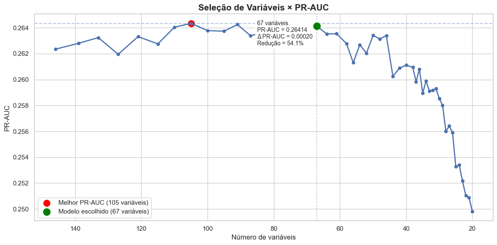
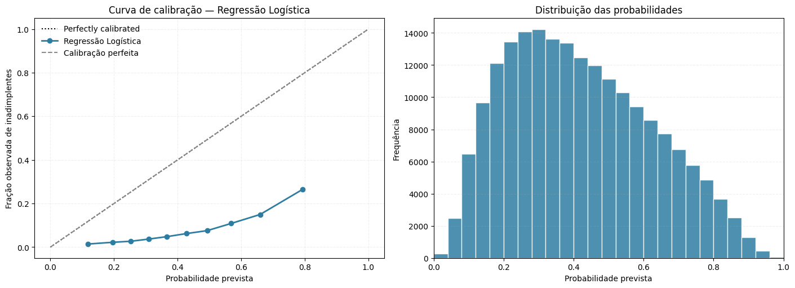
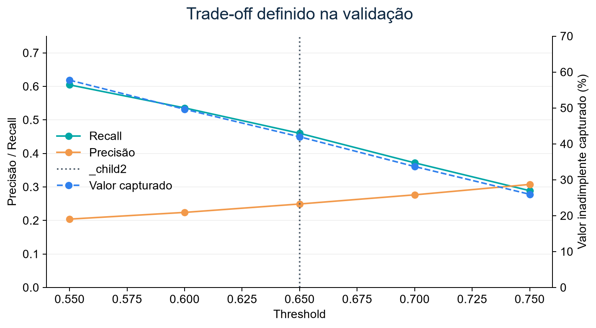
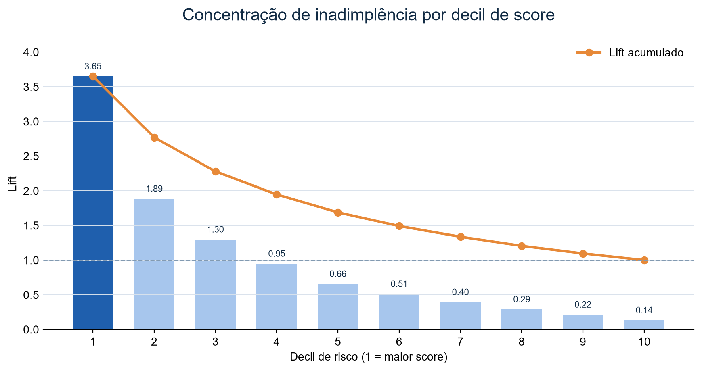
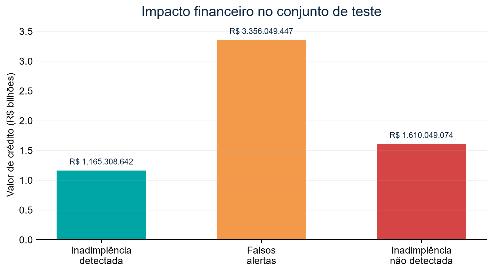

flowchart LR A[Home Credit CSVs] --> B[00_PREP_DATA\nagregações] B --> C[conjunto_completo.csv] C --> D[01_EDA-FE\nEDA, FE e filtros] D --> E[Split estratificado] E --> F[Baseline + CV + RFECV] F --> G[LightGBM + threshold] G --> H[Teste final] H --> I[MLflow Registry @champion] I --> J[Airflow batch scoring] J --> K[PostgreSQL monitoring] K --> L[Power BI / retraining]
Credit Risk Modeling
Technical Model Development Report
Executive Technical Summary
Este é um Technical Model Development Report, não um README. Ele reconstrói o desenvolvimento usando os notebooks 00-03, código src/, configurações, DAGs, migrações e resultados preservados. A estrutura é: evidência observada → interpretação técnica → decisão → consequência.
307.511propostas analisadas
8,07%taxa de inadimplência
67features no contrato final
0,2790PR-AUC no conjunto de teste
| Contexto | Evidência | Decisão | Consequência |
|---|---|---|---|
| Classe rara | 307.511 propostas; 8,07% de inadimplência | PR-AUC e pesos de classe são prioritários | Acurácia não seleciona o modelo |
| Complexidade | 146 atributos pré-wrapper | RFECV reteve 67 | Contrato menor de inferência e monitoramento |
| Algoritmo | LightGBM: PR-AUC CV 0,2641 ± 0,0029 | Champion | Melhor ranking entre RF, XGBoost e baseline |
| Operação | Threshold 0,65 definido na validação | Decisão separada do treinamento | 41,99% da exposição inadimplente foi sinalizada no teste |
EvidenceClasse positiva de 8,07% em 307.511 propostas.
DecisionLightGBM promovido pelo ranking PR-AUC em validação cruzada.
ResultPR-AUC de 0,2790 e KS de 0,4168 no teste final.
RiskNão há validação temporal/out-of-time preservada.
Business impact41,99% da exposição inadimplente foi sinalizada no teste.
Estado registrado: credit-risk-model, versão 1, alias champion, run 041dcb5dc2bf4c169bff35c527d334a7. O modelo retorna probability_default e default_prediction.
AvisoLacunas auditáveis
Não foi identificada validação temporal/out-of-time. O espaço de busca, número de trials e histórico do Optuna não estão preservados nos notebooks versionados. Essas são lacunas de evidência, não informações a serem inferidas.
1 Contexto e formulação do problema
1.1 Business Problem
Priorizar propostas de crédito com maior probabilidade de inadimplência. Um falso negativo deixa exposição sem sinalização; um falso positivo consome capacidade analítica e pode gerar atrito. Custos monetários, política de aprovação e horizonte formal do target não foram identificados no material e precisam ser definidos por negócio e risco.
1.2 Analytical Problem → ML Problem → Decision Problem
| Camada | Formulação |
|---|---|
| Analítica | Uma linha por aplicação SK_ID_CURR; target binário TARGET (1 inadimplência observada, 0 não inadimplência). |
| Machine learning | Classificação supervisionada que estima \(P(TARGET=1\mid X)\). |
| Decisão | Aplicar um threshold a uma probabilidade para priorizar revisão em batch; não é decisão automática de crédito. |
2 Arquitetura da solução
Desenvolvimento e operação do modelo
<div class="architecture-node"><img src="assets/technology/python.svg" alt="Python"><strong>Data & Processing</strong><span>CSV, pandas e agregações por cliente</span></div>
<div class="architecture-node"><img src="assets/technology/scikitlearn.svg" alt="scikit-learn"><strong>Features & Validation</strong><span>Pipeline, RFECV e cross-validation</span></div>
<div class="architecture-node"><img src="assets/technology/mlflow.svg" alt="MLflow"><strong>Model Registry</strong><span>Experimentos, artefatos e alias champion</span></div>
<div class="architecture-node"><img src="assets/technology/airflow.svg" alt="Apache Airflow"><strong>Batch Inference</strong><span>Orquestração de scoring e retreino</span></div>
<div class="architecture-node"><img src="assets/technology/postgresql.svg" alt="PostgreSQL"><strong>Monitoring Store</strong><span>Predições, drift, qualidade e performance</span></div><p class="architecture-group-label">Infraestrutura e consumo</p>
<div class="architecture-lane">
<div class="architecture-node"><img src="assets/technology/docker.svg" alt="Docker"><strong>Docker Compose</strong><span>Ambiente reprodutível</span></div>
<div class="architecture-node"><img src="assets/technology/mlflow.svg" alt="MLflow"><strong>Champion / Challenger</strong><span>Promoção controlada</span></div>
<div class="architecture-node"><img src="assets/technology/airflow.svg" alt="Apache Airflow"><strong>Controlled Retraining</strong><span>Dados maturados e gates</span></div>
<div class="architecture-node"><img src="assets/technology/powerbi.png" alt="Power BI"><strong>Power BI</strong><span>Indicadores e alertas operacionais</span></div>
<div class="architecture-node"><img src="assets/technology/postgresql.svg" alt="PostgreSQL"><strong>Audit Trail</strong><span>Rastreabilidade por versão</span></div>
</div>| Componente | Responsabilidade | Entrada | Saída |
|---|---|---|---|
| Notebooks 00-03 | Desenvolvimento | CSVs e dados intermediários | Dados, análises e modelo |
feature_engineering.py |
FE e contrato | Dados brutos ou engenheirados | 67 features ordenadas |
| MLflow | Tracking e registry | Parâmetros, métricas, artefatos | Modelo com assinatura e aliases |
| Airflow | Orquestração | Batch ou dados maturados | Predições, facts ou challenger |
| PostgreSQL | Monitoramento | Predições, features, rótulos | Star schema para Power BI |
3 Dados
3.1 Origem e granularidade
application_train.csv é a tabela base. bureau, bureau_balance, previous_application, POS_CASH_balance, credit_card_balance e installments_payments são agregadas antes do join. bureau_balance é agregado por SK_ID_BUREAU; os demais resultados, por SK_ID_CURR. Isso preserva uma linha por proposta e evita multiplicação de registros.
| Evidência observada | Implicação de modelagem |
|---|---|
| 307.511 aplicações | Amostra suficiente para CV, mas sem evidência temporal |
| 8,07% de eventos | Classe rara; usar PR-AUC, recall, KS e scale_pos_weight |
BASEMENTAREA_MEDI: 58,52% missing; EXT_SOURCE_1: 56,38%; cartão: até 71,74% |
Missing é analisado como possível sinal e imputado no pipeline |
| 146 atributos após tratamento inicial | Seleção é necessária para reduzir redundância |
| Relatório pós-join de duplicidades não identificado | A proteção observada é o padrão de agregação pré-join |
4 Análise exploratória e testes estatísticos
Cada análise responde a uma pergunta e não demonstra causalidade.
| Hipótese | Método | Resultado | Interpretação | Decisão |
|---|---|---|---|---|
| Tipo de contrato se associa ao target? | Qui-quadrado + V de Cramér | \(\chi^2=293,15\), p<0,001, V=0,0309; Cash 8,35% vs Revolving 5,48% | Associação estatística muito fraca | Candidata, não causal |
| Há diferença por gênero? | OR, qui-quadrado e V | OR M/F=1,50; \(\chi^2=920,01\), V=0,0547 | Efeito muito fraco | CODE_GENDER removida; apenas fairness review |
| Variáveis contínuas separam classes? | KS bicaudal | EXT_SOURCE_COMPLT_MEAN: KS=0,3241 |
Separação univariada relevante | Insumo para seleção, não regra isolada |
| Outlier é risco? | Isolation Forest, 200 árvores | Outliers 6,19%; demais 8,42% | Atipicidade não é proxy de risco | Não vira regra/feature de risco |
4.1 Definições e fórmulas
Qui-quadrado. Testa independência entre variável categórica e target:
\[\chi^2=\sum_{i,j}\frac{(O_{ij}-E_{ij})^2}{E_{ij}}\]
p-valor baixo contradiz independência, mas não mede intensidade ou causalidade. Por isso V de Cramér foi reportado:
\[V=\sqrt{\frac{\chi^2}{n\cdot\min(r-1,c-1)}}\]
Odds ratio. Compara odds entre grupos: \(OR=[p_1/(1-p_1)]/[p_2/(1-p_2)]\). Não controla confundidores.
KS univariado. \(KS=\max_x|F_0(x)-F_1(x)|\). Quanto maior, maior a diferença entre distribuições de adimplentes e inadimplentes.
WoE/IV. O notebook discretiza numéricas em decis, trata missing como categoria e aplica suavização de 0,5: \(WoE_i=\ln(\%bons_i/\%maus_i)\) e \(IV=\sum(\%bons_i-\%maus_i)WoE_i\). IV apoiou diagnóstico; não há threshold de IV versionado como gate automático.
Spearman. Avalia relação monotônica por postos para investigar redundância; é menos sensível a extremos que Pearson.
5 Preparação dos dados
| Problema | Alternativas | Implementação | Justificativa / impacto |
|---|---|---|---|
| Missing numérico | excluir, média, mediana | SimpleImputer(median) |
Robusto e preserva linhas |
| Missing categórico | categoria, moda, excluir | SimpleImputer(most_frequent) |
Entrada válida ao encoder |
| Escala | nenhuma, min-max, z-score | StandardScaler |
Consistência com baseline linear; árvores não dependem dela |
| Categoria nova | falhar, one-hot, ordinal | OrdinalEncoder(...unknown_value=-1) |
Batch não falha por categoria nova |
| Desbalanceamento | sampling, pesos | scale_pos_weight=n_0/n_1 no treino |
Repondera a perda sem alterar a população |
| Leakage / fairness | manter, remover | SK_ID_CURR e CODE_GENDER removidos |
Identificador não entra no modelo; gênero não vira regra |
Transformações são ajustadas na Pipeline só com treino. Depois de congelar decisões, treino e validação são concatenados para o ajuste final; teste permanece separado.
6 Feature engineering
O módulo versionado cria 54 features e MODEL_FEATURES fixa 67 entradas. _safe_divide transforma denominador zero em NaN, delegando imputação à Pipeline.
| Família | Exemplos implementados | Hipótese | Mantidas? |
|---|---|---|---|
| Capacidade financeira | BENS_RENDA_RATIO, CREDITO_VS_BEM_RATIO, DIVIDA_RENDA_RATIO |
Comprometimento e endividamento diferenciam risco | Sim |
| Tempo | IDADE_ANOS, TEMPO_EMPREGADO_ANOS, TEMPO_CADASTRO_ANOS, TEMPO_DOCUMENTO_ANOS |
Estabilidade e ciclo de vida agregam contexto | Sim |
| Bureau | PCT_CREDITOS_ATIVOS, UTILIZACAO_LIMITE_BUREAU, VALOR_CREDITO_MEDIO_BUREAU |
Histórico e utilização são sinais de risco | Sim |
| Pagamento | ATRASO_POR_PARCELA, PCT_PAGAMENTO_REALIZADO, PAGAMENTO_SALDO_RATIO |
Atraso e capacidade de pagamento sinalizam estresse | Sim |
| Externas | EXT_SOURCE_MIN/MAX, EXT_SOURCE_COMPLT_MEAN/SUM |
Combinação reduz dependência de uma fonte | Sim |
| Contato/imóvel | TOTAL_FLAGS_DOCUMENTOS, CONTATOS_POR_CREDITO, AREA_CONSTRUIDA_TOTAL, QUALIDADE_MORADIA |
Contexto cadastral e patrimonial pode adicionar sinal | Sim |
| Feature / grupo | Regra de construção | Status final |
|---|---|---|
COMPROMETIMENTO_RENDA_PCT, CREDITO_RENDA_RATIO, ANNUITY_RENDA_ANUAL, RENDA_DISPONIVEL |
razões/diferença entre renda, anuidade e crédito | Removidas na seleção manual |
EXPERIENCIA_IDADE_RATIO, RENDA_PER_CAPITA, DEPENDENTES_POR_MEMBRO, RENDA_POR_DEPENDENTE |
razões de tempo e família | Removidas |
TOTAL_CONTATOS_ATIVOS, TOTAL_CONSULTAS_BUREAU, CONSULTAS_ANO_NORMALIZADA, mobilidade |
somas e razões de flags/consultas | Apenas CONTATOS_POR_CREDITO mantida |
EXT_SOURCE_MIN/MAX/RANGE |
mínimo, máximo e amplitude das três fontes | Min e max mantidas; range removida |
AREA_CONSTRUIDA_TOTAL, QUALIDADE_MORADIA, AREA_VIVA_RATIO |
somas e razão de atributos de imóvel | Duas primeiras mantidas |
| Dívida e bureau | razões dívida/renda/crédito/bem/per capita | Dívida/renda, utilização e valor médio mantidos |
| Cartão, POS e parcelas | utilização, pagamento, saque, DPD, valor/atraso por parcela | PAGAMENTO_SALDO_RATIO, SAQUE_LIMITE_RATIO, DPD_DEF_MEDIO_POS, PCT_PAGAMENTO_REALIZADO, VALOR_MEDIO_PARCELA, ATRASO_POR_PARCELA mantidas |
AvisoDecision rationale gap: atraso
ATRASO_PAGAMENTO_MAX é derivada de DAYS_ENTRY_PAYMENT, que é data relativa e não atraso explícito. Como ATRASO_POR_PARCELA depende dela, ambas exigem revisão com uma diferença validada, como DAYS_ENTRY_PAYMENT - DAYS_INSTALMENT, antes de produção.
7 Feature selection
flowchart TD A[193 atributos após FE] --> B[Pruning manual\nID, gênero, flags raras, redundância] B --> C[146 pré-RFECV] C --> D[missing, IV/WoE, KS, qui-quadrado, correlação > 0,90] D --> E[RFECV customizado\nPR-AUC] E --> F[67 no contrato final]
| Etapa | Entrada | Método / critério | Saída | Evidência |
|---|---|---|---|---|
| Engenharia e diagnóstico | Não identificado por subetapa | FE, flags, qualidade | 193 | Relatório de qualidade do notebook |
| Pruning | 193 | listas manuais, SK_ID_CURR, gênero, flags dominantes, redundâncias |
146 | Shape dos splits |
| RFECV | 146 | step=0,05, mínimo 20, 3 folds, 5 repetições, PR-AUC |
67 | Curva e lista versionada |
PR-AUC foi 0,26434 com 105 features, 0,26425 com 91 e 0,26414 com 67. A seleção reduz 79 atributos com diferença pequena para o máximo observado. O material não contém um critério formal que explique 67 em vez de 91/105; a justificativa verificável é parcimônia com desempenho preservado.

8 Estratégia de validação
O código, fonte de verdade, realizou split aleatório estratificado com random_state=42.
| Partição | Linhas | Fração | Evento | Papel |
|---|---|---|---|---|
| Treino | 196.806 | 64% | 8,0729% | Ajuste |
| Validação | 49.202 | 16% | 8,0728% | Threshold, calibração e desenvolvimento |
| Teste | 61.503 | 20% | 8,0728% | Avaliação final |
O texto do notebook cita 80/20/20, mas o código separa 20% de teste e 20% dos 80% restantes para validação: 64/16/20. A comparação de modelos usou StratifiedKFold(n_splits=3, shuffle=True, random_state=42). A estratégia protege contra leakage de prevalência, mas não avalia drift temporal; essa é a principal limitação de generalização.
9 Modelagem, experimentos e tuning
9.1 Baseline e modelos candidatos
| ID | Hipótese | Modelo | Resultado | Decisão |
|---|---|---|---|---|
| E01 | Baseline interpretável é referência | Logística class_weight=balanced, 5 folds |
PR-AUC teste 0,2415; ROC 0,7569; KS 0,3867 | Accepted como baseline |
| E02 | Bagging melhora não linearidade | Random Forest | PR-AUC CV 0,2349 ± 0,0015 | Rejected |
| E03 | XGBoost melhora ranking | XGBoost | PR-AUC CV 0,2560 ± 0,0010 | Rejected |
| E04 | LightGBM oferece melhor separação | LightGBM | PR-AUC CV 0,2641 ± 0,0029; ROC 0,7739; KS 0,4138 | Accepted como champion |
| Modelo | Precision CV | Recall CV | F1 CV | ROC-AUC CV | PR-AUC CV | KS CV |
|---|---|---|---|---|---|---|
| LightGBM | 0,1923 ± 0,0014 | 0,6401 ± 0,0035 | 0,2957 ± 0,0018 | 0,7739 ± 0,0014 | 0,2641 ± 0,0029 | 0,4138 ± 0,0019 |
| XGBoost | 0,4438 ± 0,0082 | 0,0960 ± 0,0035 | 0,1579 ± 0,0045 | 0,7665 ± 0,0012 | 0,2560 ± 0,0010 | 0,4009 ± 0,0014 |
| Random Forest | 0,2142 ± 0,0018 | 0,4865 ± 0,0074 | 0,2974 ± 0,0028 | 0,7553 ± 0,0010 | 0,2349 ± 0,0015 | 0,3853 ± 0,0026 |
O notebook afirma que tuning Optuna multivariado não superou a configuração manual, que foi mantida. Não foram identificados search space, número de trials, early stopping, melhor trial ou log persistido. Esse experimento é registrado como rejected / evidence gap, não como tuning auditável.
10 Métricas, threshold e avaliação
| Métrica | Fórmula / definição | Papel | Teste final |
|---|---|---|---|
| Precisão | \(TP/(TP+FP)\) | Qualidade dos alertas | 0,2561 |
| Recall | \(TP/(TP+FN)\) | Cobertura de inadimplentes | 0,4701 |
| F1 | \(2PR/(P+R)\) | Escolha do threshold | 0,3316 |
| PR-AUC | Área Precisão-Recall | Métrica primária de ranking em classe rara | 0,2790 |
| ROC-AUC | Área TPR × FPR | Ordenação global | 0,7801 |
| KS | \(\max(TPR-FPR)\) | Máxima separação acumulada | 0,4168 |
| Brier | média \((\hat p-y)^2\) | Calibração; menor é melhor | Não preservado para campeão |
Uma seleção aleatória teria PR-AUC próximo de 0,0807. Curvas de calibração foram inspecionadas na validação: Brier XGBoost 0,070084; RF 0,151833; LightGBM 0,173206. LightGBM foi selecionado por ranking, não por Brier; não há evidência de calibração posterior.

O threshold foi avaliado de 0,01 a 0,99 na validação. 0,65 maximizou F1 e foi congelado antes do teste.
| Threshold | Precisão | Recall | F1 | Captura financeira | % capturado |
|---|---|---|---|---|---|
| 0,60 | 0,2240 | 0,5358 | 0,3159 | R$ 1,10 bi | 49,63% |
| 0,64 | 0,2443 | 0,4756 | 0,3228 | R$ 964,06 mi | 43,42% |
| 0,65 | 0,2491 | 0,4600 | 0,3232 | R$ 931,67 mi | 41,96% |
| 0,70 | 0,2764 | 0,3719 | 0,3171 | R$ 747,94 mi | 33,68% |

11 Modelo final, interpretabilidade e erros
| Campo | Especificação |
|---|---|
| Algoritmo | LightGBM binário, GBDT |
| Treino final | treino + validação: 246.008 linhas |
| Features | 67 |
| Hiperparâmetros | 950 árvores; learning_rate=0,02; 31 leaves; subsample=0,8; colsample_bytree=0,8; L1=0,1; L2=1,0 |
| Input / output | 67 features tipadas / probabilidade e decisão |
| Registry | MLflow credit-risk-model@champion |
Feature importance por split/gain, SHAP summary e SHAP importance foram registrados como artefatos MLflow. O ranking numérico e a direção dos efeitos não estão versionados; não são reproduzidos aqui para não inventar drivers.
Na análise por decil de crédito, o decil 6 alcançou recall 57,67% e capturou 57,72% do valor inadimplente daquele segmento. O decil 10, de maior ticket médio, teve recall 27,07% e captura 26,39%, embora concentre 16,15% da exposição inadimplente. Esse é um segmento prioritário para monitoramento, não uma mudança de modelo validada.

12 Impacto de negócio
O impacto usa AMT_CREDIT como proxy de exposição, não perda líquida.
\[Valor\ capturado=\sum AMT\_CREDIT[TARGET=1\land PRED=1]\]

| Indicador | Resultado |
|---|---|
| Carteira analisada | R$ 36,77 bilhões |
| Exposição inadimplente observada | R$ 2,78 bilhões |
| Detectada | R$ 1,17 bilhão |
| Não detectada | R$ 1,61 bilhão |
| Falsos alertas | R$ 3,36 bilhões |
| Valor inadimplente capturado | 41,99% |
LGD, EAD regulatória, recuperação, margem e custo de operação não foram fornecidos. Assim, o resultado mostra exposição sinalizada, não benefício financeiro líquido.
13 Inferência, MLOps, monitoramento e retreino
flowchart LR A[CSV/Parquet] --> B[load_data] B --> C[MLflow resolve @champion] C --> D[selection_features\ncontrato de 67] D --> E[predict_proba] E --> F[threshold] F --> G[Predições] G --> H[PostgreSQL / Power BI]
predict.py cria/seleciona features, alinha tipos à assinatura MLflow e valida as duas saídas. save_predictions.py não sobrescreve arquivos. Airflow orquestra; a lógica está em src/.
| Área | Métrica / regra | Warning / critical | Ação |
|---|---|---|---|
| Qualidade | probabilidade [0,1], crédito positivo | falha crítica | Corrigir carga |
| Feature drift | PSI | ≥0,10 / ≥0,25 | Investigar população |
| Distribuição | KS | ≥0,10 / ≥0,20 | Investigar fonte |
| Missing | delta de missing | ≥3 / ≥10 p.p. | Validar pipeline |
| Categoria | não vista | ≥1% / ≥5% | Atualizar contrato/origem |
| Performance maturada | PR-AUC, ROC, KS, P/R/F1, Brier e exposição | SLO não versionado | Avaliar após rótulos |
O baseline de treino é persistido em fact_training_observation; batches, drift, qualidade e performance têm facts próprios. Performance só é calculada depois que observed_target estiver disponível.
Na produção, retreino exige no mínimo 5.000 linhas e 100 eventos maturados. O challenger é treinado, define threshold na validação e é comparado ao champion pelo PR-AUC no mesmo teste. O alias champion só muda se o challenger for superior e a promoção estiver permitida; o anterior recebe tag archived. Modo simulation bloqueia promoção.
14 Limitações, Decision Log e Experiment Log
| ID | Decisão | Evidência | Impacto |
|---|---|---|---|
| D01 | Split estratificado aleatório | Mesma taxa nos três conjuntos | Preserva prevalência, não valida tempo |
| D02 | Mediana/moda + encoder seguro | Missing elevado e categorias novas | Pipeline resiliente |
| D03 | Pesos de classe | 8,07% de eventos | Classe positiva reponderada |
| D04 | 67 features | Curva RFECV | Menor contrato |
| D05 | LightGBM | Maior PR-AUC CV | Champion |
| D06 | PR-AUC primário | Classe rara | Seleção/promoção coerentes |
| D07 | Threshold 0,65 | F1 validação | Trade-off explícito |
| D08 | Batch + PostgreSQL | Escopo e DAGs | Auditoria e Power BI |
| ID | Hipótese | Resultado | Status |
|---|---|---|---|
| E01 | Logística é baseline | PR-AUC teste 0,2415 | Accepted |
| E02 | Random Forest supera baseline | PR-AUC CV 0,2349 | Rejected |
| E03 | XGBoost supera LGBM | PR-AUC CV 0,2560 | Rejected |
| E04 | LightGBM é mais discriminativo | PR-AUC CV 0,2641 | Accepted |
| E05 | Menos atributos preserva qualidade | 67: 0,26414 | Accepted |
| E06 | Optuna melhora manual | Evidência detalhada ausente; notebook relata que não melhorou | Rejected / evidence gap |
Principais riscos: ausência de validação temporal, atraso de pagamento com definição pendente, calibração não otimizada, custo de FP/FN indefinido, regras de fairness e qualidade de domínio ainda não configuradas, e drivers SHAP não preservados no repositório.
15 Reprodutibilidade e próximos passos
- Criar
.envlocal, sem versioná-lo; executaruv sync. - Executar
docker compose up -d --build. - Executar notebooks 00 → 01 → 02 → 03.
- Executar
uv run pytest. - Renderizar:
quarto render docs/documentation/technical-documentation-pt-br.qmd.
Próximos passos: corrigir ATRASO_PAGAMENTO_MAX; versionar trials Optuna; usar holdout temporal; definir função de custo; configurar regras de domínio aprovadas; e exportar ranking SHAP/erros por segmento como artefatos versionados.